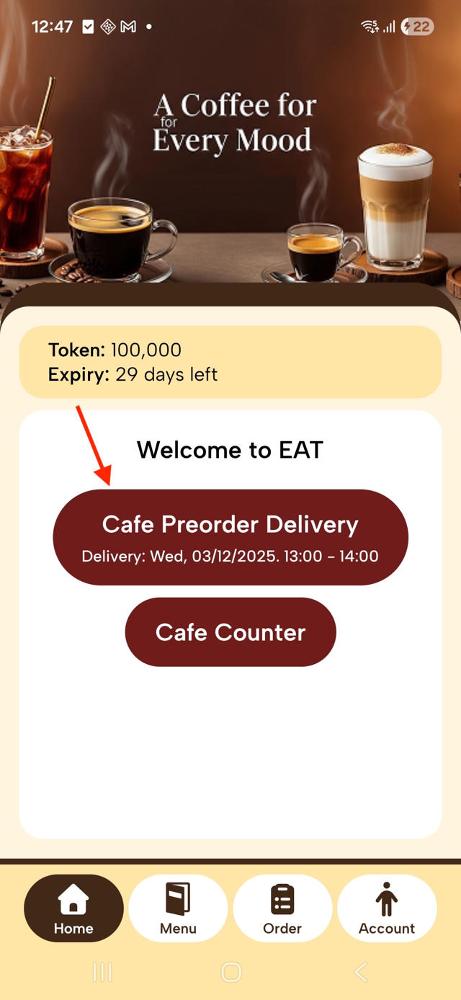
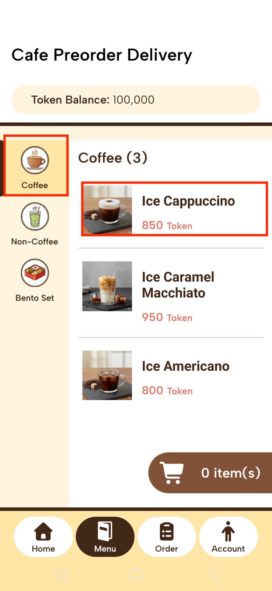
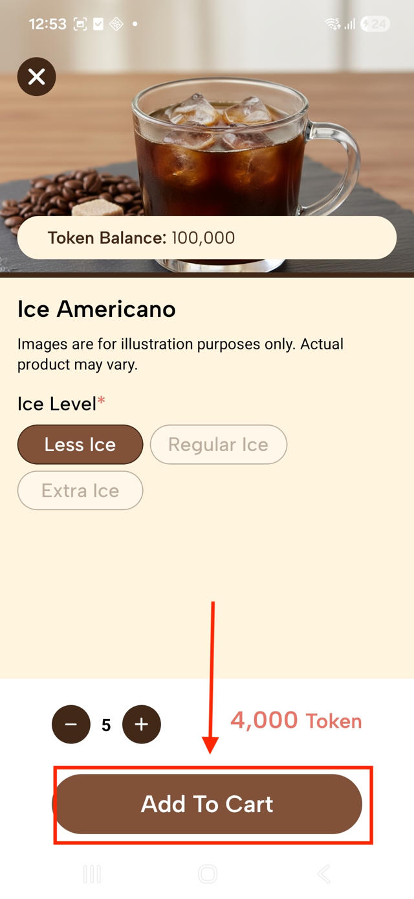
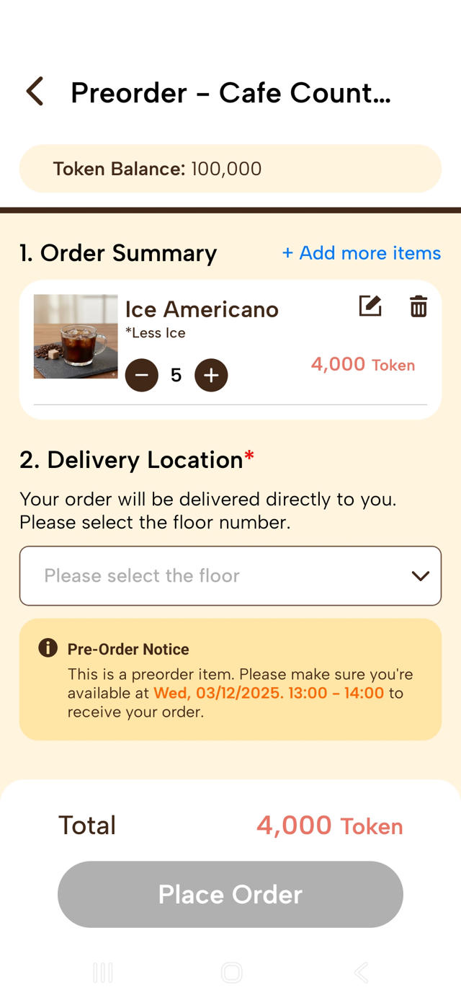
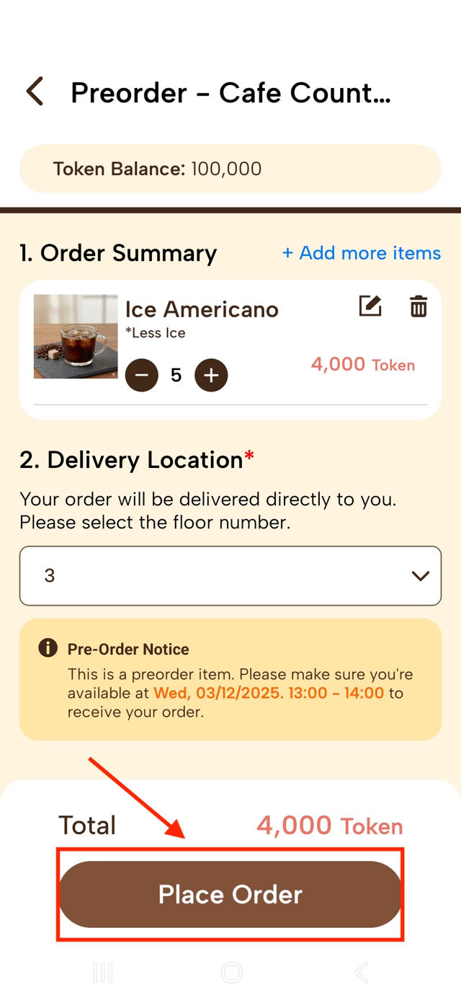
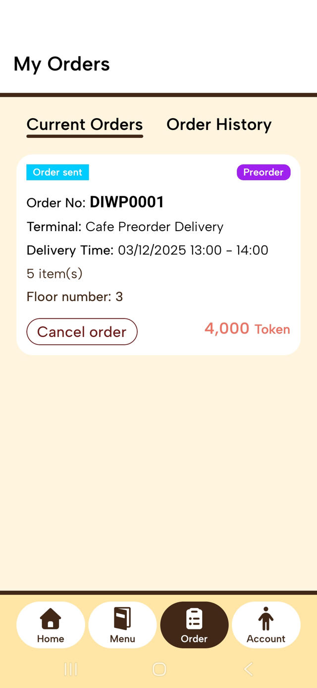
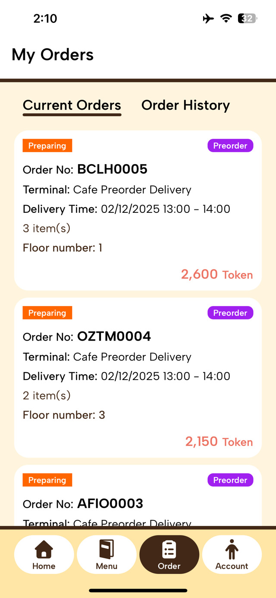
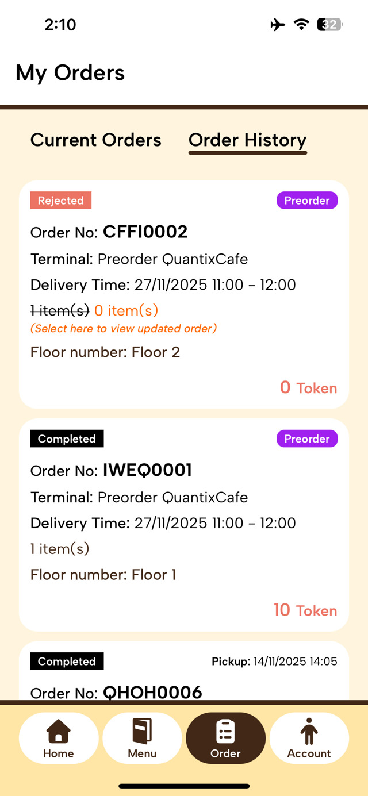

This guide will help you understand and use the EAT (Employee
Appreciation Tokens) program. EAT is an internal program designed to provide all staff and members of
the SG organization with "Tokens" to redeem food and beverages from the on-site GnT cafe. Only
whitelisted email will be able to login to the app.
How It Works
You receive a monthly allowance of free tokens.
You use the EAT mobile app to place all orders.
Tokens are used as payment for items from the GnT cafe.
The app manages your balance, orders, and pickups.
Key Things to Know
Tokens Expire: Your token balance is valid for a limited time and will
refresh each month. Use them before they expire!
No Cash Top-Ups: You cannot add money or buy more tokens.
Personal Use Only: Tokens are for your own use and cannot be used to sell
items.
No Direct Orders: All orders must be placed through the mobile app.
How to Use the App: Step-by-Step
Follow this guide to learn the entire process, from logging in for
the first time to picking up your order. Click on a step to see the details.
Step 1: Log In
Sign in with your work email using Single Sign-On (SSO). Only
whitelisted emails can access the app and make an order. Please inform HR is you are unable
to login to app.
Step 2: Choose Counter
After logging in, you'll see your token balance and expiry.
Select one of the two counters. Note that they have different opening hours.
Coffee Counter
Monday-Friday: 9:00am – 4:00pm
Bar Counter
Monday-Friday: 5:00pm – 9:30pm
Step 3: Select Food & Drinks
Use the sidebar to navigate categories (Coffee, Non-Coffee, Tea,
etc.). Tap on an item to see details and add it to your cart. You will see the token cost
for each item.
Step 4: Check Out
Once you're ready, go to your cart to check out. Here you can:
View your Order Summary and make last-minute changes (edit quantity,
delete items).
Select a Pickup Time Slot. The time slots are color-coded to show how
busy they are.
<20min20-50min>50minFull
Place Order. Your order is then sent to the EAT system, and your tokens
are deducted.
Step 5: Get Notified
You will receive push notifications on your phone as your order
progresses. You can also check the status in the "Order" tab of the app.
Preparing: Café staff have accepted your order and will start preparing
it.
Modify Order: If an item is out of stock, it will be removed from your
order. The rest will be processed, and tokens for the removed item will be refunded.
Completed: Your order is ready for pickup!
Step 6: Pick Up Your Order
When your order is ready ("Completed"), go to the pickup location
on the 32nd floor.
Go to the "Order" page in your app.
Find your current order and select "QR for Pickup".
Scan the QR code at the scanner at the counter.
Pick up your order and enjoy!
Frequently Asked Questions & Rules
FAQs
How do I log in for the first time?
You can log in using your company email through Single Sign-On (SSO)
with Google, Apple, or Microsoft. Just choose your provider on the login screen. If you are
unable to login, please inform your HR.
How do I know when my order is ready?
You can track your order's progress in the "My Orders" section of the
app. The status will update from "Sent" to "Preparing," and finally to "Ready for Pickup."
You'll also receive a push notification for the "Preparing" and "Ready for Pickup" stages.
What happen if my token expired?
All Employee Appreciation Tokens are valid for a limited time. The
expiration countdown is always visible on your app's home screen. Unused tokens will expire and
be forfeited. However, your token will refresh each month.
I want to cancel or modify order?
You cannot modify your order, but you can cancel
your order under the “Order” page if the café staff haven’t “accepted” your
order yet. When the order has been accepted, you cannot make any changes.
Can I topup token with cash?
Currently we do not accept any topup cash transaction.
I can’t find my order at the counter. What do
I do?
Please make sure your order status is “Ready for Pickup”. If you
still can’t find your order, please inform café staff, they will check and will redo the order
if needed.
Can I order directly thru the café counter?
We don’t accept direct order, please use your mobile app to order.
Can I pickup the order on behalf of my
colleague(s)?
Yes you can. Take a screenshot of your colleague(s) Pickup QR code
and scan the QR code before you pickup the items.
I forgot to pickup order, can i have a
refund?
All accepted order are not refundable. Uncollected item will be
discarded by end of the day.
Rules & Regulations
Personal Use
Token if for your own usage, you cannot use the token to sell the
item.
Compliance & Misuse
Management reserves the right to review order histories to ensure
compliance with company policies (e.g., regarding the purchase of alcoholic beverages during
work hours). Misuse of the program may result in suspension of access.
Mobile App – Pre-order User Flow
Overview
This guide explains how users can place Pre-orders using the Mobile App.
1. Logging In
Open the Mobile App. Log in using your account credentials.
After successful login, the system navigates to the Home Screen.
2. Viewing Terminals
On the Home Screen, users can see a list of terminals, which
includes:
Normal Terminals
Pre-order Terminals
Note:
The system automatically generates the Pre-order terminal list
based on the ordering window (opening and closing times) configured by the merchant on the
web.
3. How to Place a Pre-order
Step 1: Select a Pre-order Terminal
Tap on a Pre-order Terminal from the Home Screen.
The system navigates to the Menu Screen for that terminal.

Step 2: Add Items to Cart
Browse the menu and select the items you want to pre-order.
Tap Add to Cart for each item.
You can continue adding more items from the menu before proceeding to checkout.

Step 3: Proceed to Checkout
Open the Cart to review all selected items.
Tap on the Cart, The system then navigate to the Checkout screen.

Unlike normal orders, Pre-orders require a delivery location.
Fill in the required delivery information.
Tap Place Order to complete the Pre-order.
Step 4: Review Order
After placing the order, the system navigates to the Order Screen.
Here, users can review the order details again. Orders that belong to pre-order will
be flagged as ‘Pre-order’.
Users can still cancel the order or place another order as long as the ordering
window is still open.

Order Status Flow
1. Sent
The user has successfully placed an order within the ordering window.
During this period, the user is allowed to cancel the order or place a new order.

2. Preparing
After the ordering window closes, the system automatically changes the order status
to Preparing.
During this period, the user cannot place new orders or cancel existing orders.

3. Completed
After the delivery is successfully completed and the clean-up hour passes, the
system automatically changes the order status to Completed.

4. Rejected
When terminal staff reject the order, the system automatically updates the order
status to Rejected.
5. Canceled
When the user cancels the order, the system automatically updates the order status
to Canceled.

We would like to listen to
your Feedback
Your feedback is very important to us. Scan the QR
code or click on the Google Form to send your feedback to us. Thank you!